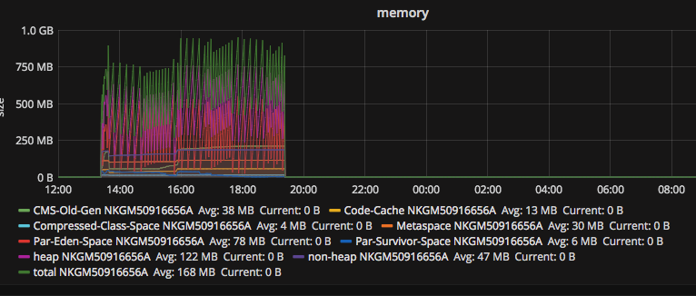
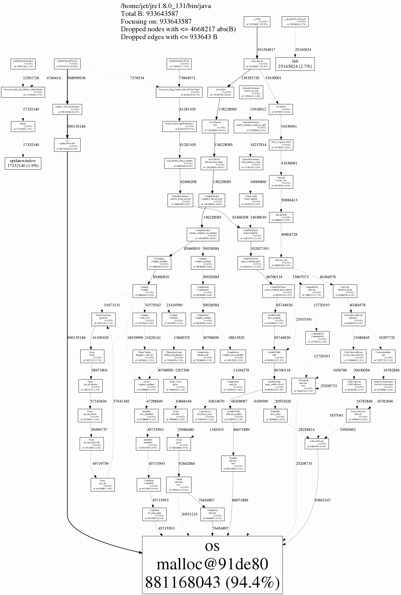

Native memory track use jemalloc for ES
May 25, 2017 14:59 · 84 words · 1 minute read
从这篇文章中得知ES在5.1版本中有原生内存泄露的问题， 而碰巧我们生产环境中也在使用5.1系列的版本，但是场景不一样。比如我们并没有使用x-pack，但是还是放心不下，决定在我们的场景下利用文章中的方法进行下测试。
先弄清楚要测试的问题，Java的内存问题，大多数集中在Java Heap上面，所以平时遇到native memory的问题几率较低。Heap是Java新对象创建的地方也是GC工作的 主要区域，平时如果遇到Heap内存问题，通过收集GC日志，基本上就能看出端倪。例如GC时间过长、GC过于频繁的话需要进行GC算法参数的调优，老年代持续增长的话就要看对象是否分配的合理了，这也是一种泄露-导致GC无法回收。不同的GC算法调优的参数不一样，但目前还是用的CMS，有时间可以总结下。
另外就是native memory的问题，例如出现了Outofmemory的错误：
Allocated 1953546736 bytes of native memory before running out
Exception in thread "main" java.lang.OutOfMemoryError: unable to create new native thread
at java.lang.Thread.start0(Native Method)
at java.lang.Thread.start(Thread.java:574)
at com.ibm.jtc.demos.StartingAThreadUnderNativeStarvation.main(
StartingAThreadUnderNativeStarvation.java:22)
遇到这样的问题，首先要确定的是是不是由堆内存申请导致的，如果不是就有可能是下面两种： 1. MetaSpace 2. Native memory
只要是JVM相关的内存问题，通过相关的监控工具都能很好的判定，例如如果集成了Metrics，可以得到

通过这样的监控可以很容易的可以看出内存问题是否是出自于JVM。
扯得有点远了，回归主题：native memory tracking。 需要清楚的是Native memory tracking是tracking Java进程申请的OS内存，即glibc申请内存的情况。而 jemalloc这个工具可以帮助我们抓取到Java进程的内存申请行为。过程也颇为简单：
git clone https://github.com/jemalloc/jemalloc
git checkout stable-4
./autogen.sh
./configure --enable-perf
make
sudo make install
启动ES之前设置下环境变量：
export LD_PRELOAD=/usr/local/lib/libjemalloc.so
export MALLOC_CONF=prof:true,lg_prof_interval:30,lg_prof_sample:17,prof_final:true
环境变量LD_PRELOAD用来替换原生的glibc malloc。 然后启动ES，运行一段时间，停掉后会生成多个jeprof.{processId}的文件，通过下面命令生成内存tracking信息：
jeprof --show_bytes --gif ~/jre/bin/java jeprof*.heap > ./app-profiling.gif
 有将近95%的内存来自于jvm本身，也由于运行时间不是很长，所以可以认为是安全的，如果再持续一段时间这个百分比降低了，说明有内存泄露的可能。
参考：